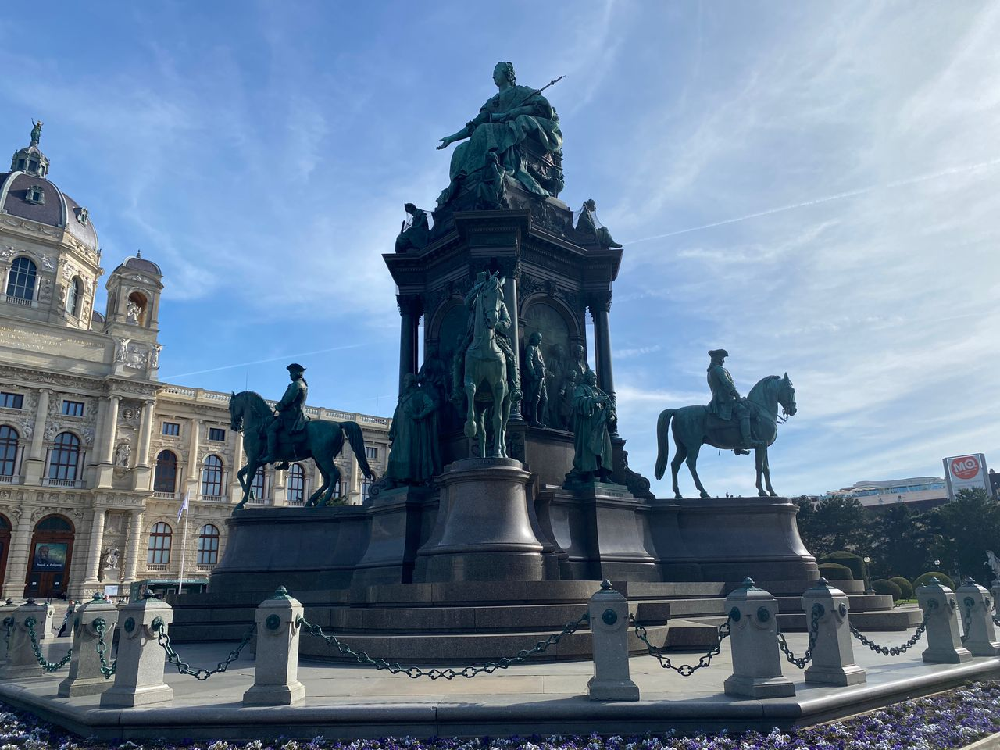
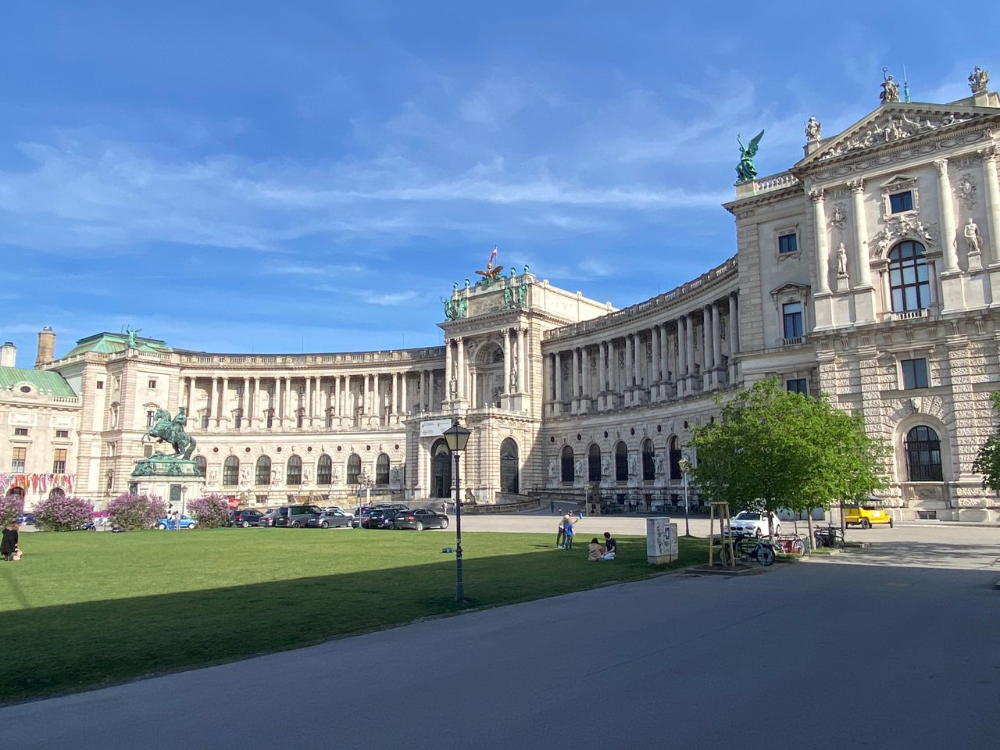
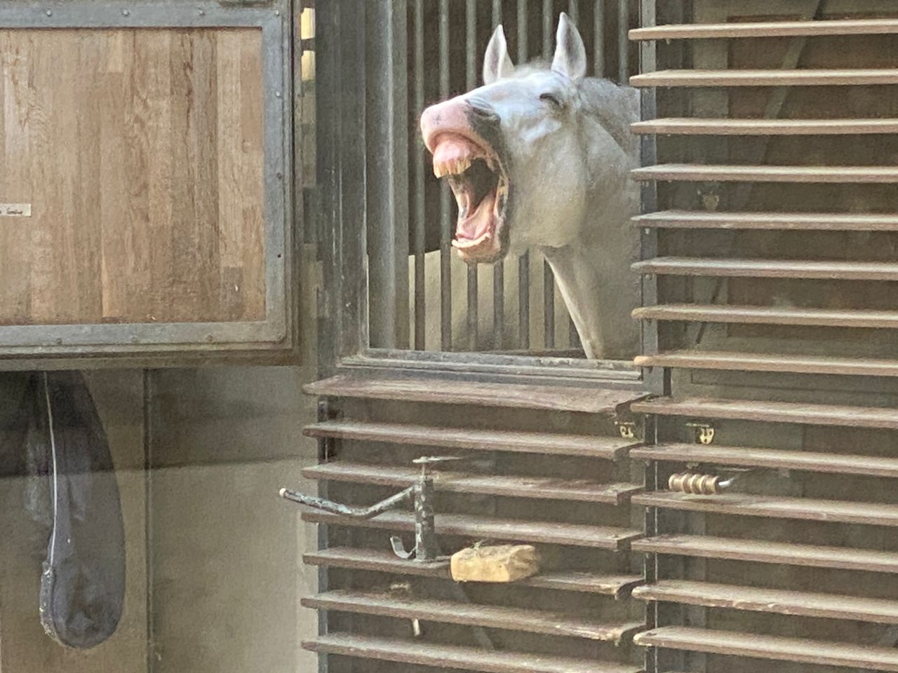
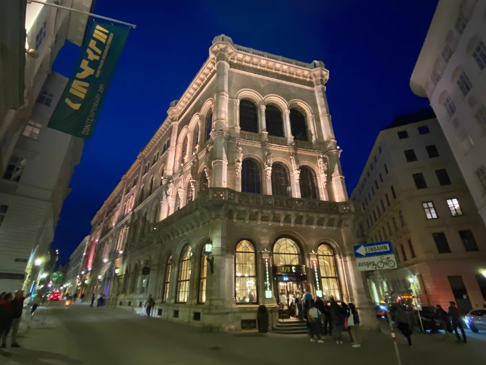

Real Story · 中文
Vienna, it is a crazy classical town.
5 April 2024，我在 Vienna 走了一条 20,296 steps 的路线。 我之前 list out 了超过 20 个 spots 要在 Vienna 两天内走完， 所以每一个地方前面才会有 number。
Vienna 给我的感觉很强烈： 它不是只有一两个漂亮建筑， 而是整个城市都像 classical history、music、palace、museum 和 café 混在一起。 Crazy classical town。

Maria-Theresien-Platz
免费进入的公共广场。
Maria-Theresien-Platz 是 Ringstrasse 和 MuseumsQuartier 之间的大型公共广场。 广场两侧面对面是两座双子建筑： Natural History Museum 和 Kunsthistorisches Museum。
对我来说，Vienna 很夸张的地方就是： 你只是走到一个免费公共广场， 已经像走进一本 classical history book。

Hofburg and Heldenplatz
霍夫堡皇宫大门与英雄广场。
Stop 5 是 Hofburg Palace gate 一带， 中文可以写霍夫堡皇宫大门。 这里靠近 Heldenplatz，也就是英雄广场。
这些地方不只是建筑大。 它们的 scale、雕像、马、广场和石墙， 会让人觉得自己很小，城市很大，历史更大。
Spanish Riding School
途经：西班牙骑术学校。
后来我途经 Spanish Riding School。 它是在 Hofburg Palace 的 Baroque winter riding school， 很有名的是白色 Lipizzaner horses 的表演和训练。
我看到马的时候，觉得很可爱。 这么 classical 的 Vienna，突然出现一匹表情很夸张的马， 整个记忆也变得没有那么严肃。

Café Central
途经：Café Central。
Stop 18 是 Café Central。 这是 Vienna 很有名的 café， 很多 writers、composers、architects、painters、psychoanalysts 和 revolutionaries 曾经在这样的咖啡馆里相会。
喝咖啡、吃 cake、抽 cigar， Vienna 的 classical feeling 不只是音乐厅， 也在 café 里面。

Walking Route
20,296 steps in one Vienna route.
那天我走了 20,296 steps。 一开始只是想按照我列出来的 spots 一个一个走， 可是越走越发现：Vienna 的 density 很疯狂。
你以为只是路过一个地方， 结果每一个转角都是 monument、museum、palace、horse、café 或 classical building。 所以我说：Vienna, it is a crazy classical town.
Overnight
5/4 & 6/4 overnight at Camping Neue Donau.
5 April and 6 April 2024，我 overnight at Camping Neue Donau, Am Kaisermühlendamm 123, 1220 Wien, Austria。
After 20,296 steps，能回到 Toyotaki、休息、睡觉， 才知道 campervan life 的节奏很重要： 白天城市很疯狂，晚上需要有一个稳定的地方把自己收回来。
English Memory Summary
Austria opened with Vienna’s classical density.
On 5 April 2024, Tuzi walked a 20,296-step route through Vienna after listing more than 20 spots to visit over two days. The route included Maria-Theresien-Platz, the Hofburg and Heldenplatz area, the Spanish Riding School, and Café Central.
Vienna felt like a “crazy classical town”: palaces, museums, monuments, horses, coffee houses, and illuminated buildings appeared one after another. On 5 and 6 April, Tuzi overnighted at Camping Neue Donau.
Heart Statement
有些城市不是一座景点，而是一整套 classical overload。
Vienna did not give me one landmark. It gave me 20,296 steps of monuments, horses, cafés, museums, and the feeling that the whole city was performing classical music in stone.